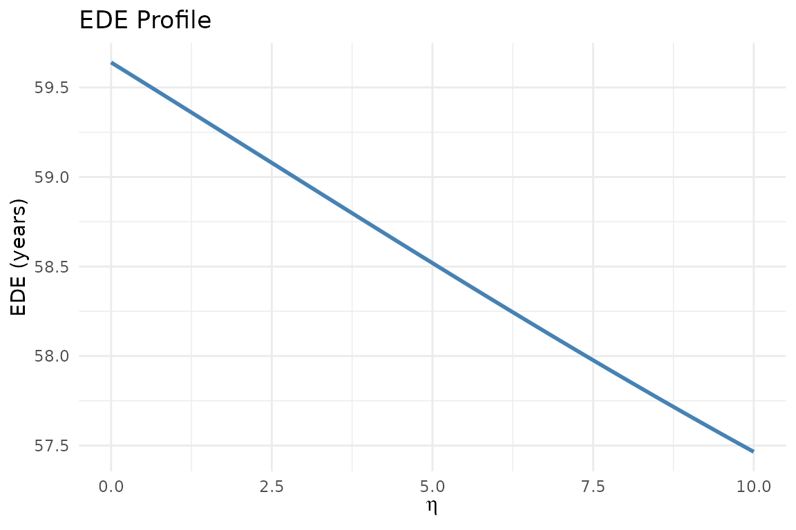

Social Welfare Functions in DCEA
Source:vignettes/v05_social_welfare_functions.Rmd
v05_social_welfare_functions.RmdAtkinson Social Welfare Function
The Atkinson SWF evaluates population health by penalising inequality according to the parameter eta (η). Higher η = stronger aversion to inequality.
The Equally Distributed Equivalent (EDE) health is the key output: the level of health that, if equally distributed, would give the same social welfare as the actual distribution.
Choosing eta: evidence from the UK
Robson et al. (2017) elicited public preferences for health inequality aversion in England using a questionnaire. Their central estimate was η ≈ 1, with a range of 0.1 to 4.8 across the sample.
NICE (2025) does not mandate a specific η but expects sensitivity analysis across a range including 0, 1, and higher values.
EDE calculation
health <- c(52.1, 56.3, 59.8, 63.2, 66.8)
weights <- rep(0.2, 5)
# eta = 0: no inequality aversion (arithmetic mean)
calc_ede(health, weights, eta = 0)
#> [1] 59.64
# eta = 1: moderate aversion (geometric mean)
calc_ede(health, weights, eta = 1)
#> [1] 59.41665
# eta = 5: strong aversion
calc_ede(health, weights, eta = 5)
#> [1] 58.51938EDE profile
profile <- calc_ede_profile(health, weights, eta_range = seq(0, 10, 0.1))
library(ggplot2)
ggplot(profile, aes(eta, ede)) +
geom_line(colour = "steelblue", linewidth = 1) +
labs(x = expression(eta), y = "EDE (years)",
title = "EDE Profile") +
theme_minimal()
Equity weights
ew <- calc_equity_weights(health, weights, eta = 1)
ew # Q1 (most deprived) gets highest weight
#> [1] 1.1361198 1.0513649 0.9898301 0.9365798 0.8861054Social welfare decomposition
post_health <- health + c(0.5, 0.6, 0.5, 0.4, 0.3)
calc_social_welfare(health, post_health, weights, eta = 1)
#> $ede_baseline
#> [1] 59.41665
#>
#> $ede_post
#> [1] 59.88513
#>
#> $delta_ede
#> [1] 0.4684784
#>
#> $efficiency_component
#> [1] 0.46
#>
#> $equity_component
#> [1] 0.008478412References
Robson M et al. (2017). Health Economics 26(10): 1328-1334. https://doi.org/10.1002/hec.3386